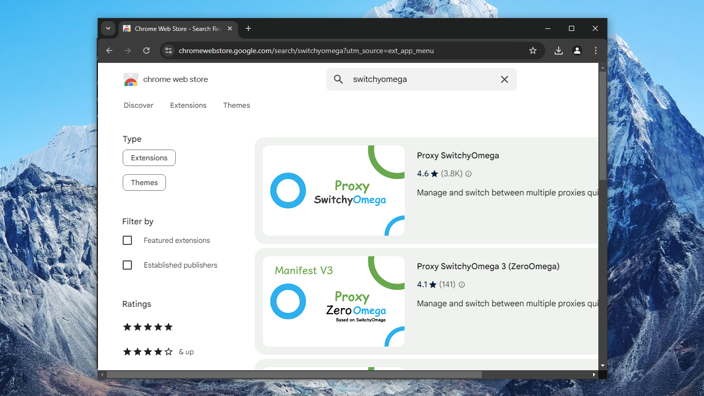

Latest recommendations for Iran
An October 2024 thread on r/dumbclub recommended these best practices:
- Use a clean IP address (i.e., not an IP address at a very common provider, which has been blocked due to the actions of previous users)
- Use
xtls-rprx-visionto prevent TLS-in-TLS detection - Use
realityfor SSL certificate exchange - Use uTLS to simulate client browser TLS fingerprint
- Use your own SSL certificate ("steal_oneself") instead of borrowing from a foreign website
- Use decoy fallback to evade SNI detection
- Block domestic IP addresses and domestic domains to prevent correlation detection (
Chocolate4U)
For friends in Iran, here's a sketch of what this might look like in practice. The sources for the details are https://github.com/Chocolate4U/Iran-v2ray-rules and https://github.com/chika0801/Xray-examples. The main Xray documentation is at https://xtls.github.io/en.
Set up server
1. Purchase a domain name. The example domain name in this tutorial is shikantaza.xyz.
2. Purchase a virtual private server (VPS) with Debian or Ubuntu operating system. Remember that IP addresses of really popular VPS companies (e.g. Hetzner) may already have been blocked due to previous users. Choose a less popular VPS provider. Preferably choose one that allows you easily to change your server's IP address.
3. Choose a subdomain and map it to your VPS IP address. The example in this tutorial is the subdomain www.shikantaza.xyz. Create a DNS "A" record pointing from the www subdomain to your server's IP address.
4. SSH into your server. You can do this in Windows PowerShell or in Terminal on Linux or macOS. Example command:
ssh root@www.shikantaza.xyz
5. Update the server:
apt update && apt upgrade -y
6. Open port 80/tcp in your server's firewall. This port needs to be open so that Let's Encrypt can verify your server when you request an SSL certificate.
7. Obtain an SSL certificate from Let's Encrypt. Replace the example www.shikantaza.xyz in what follows by your actual subdomain name.
apt install -y socat cron
curl https://get.acme.sh | sh
source ~/.bashrc
acme.sh --upgrade --auto-upgrade
acme.sh --set-default-ca --server letsencrypt
acme.sh --issue -d www.shikantaza.xyz --standalone --keylength ec-256
acme.sh --install-cert -d www.shikantaza.xyz --ecc --fullchain-file /etc/ssl/private/fullchain.cer --key-file /etc/ssl/private/private.key
chown -R nobody:nogroup /etc/ssl/private
acme.sh --renew -d www.shikantaza.xyz --force --ecc
8. Open port 443/tcp in your firewall.
9. Install Nginx:
apt install nginx -y
nginx -v
10. Edit the file /etc/nginx/nginx.conf. Replace the entire original contents of /etc/nginx/nginx.conf with this.
user www-data;
worker_processes auto;
error_log /var/log/nginx/error.log notice;
pid /var/run/nginx.pid;
events {
worker_connections 1024;
}
http {
log_format main '[$time_local] $proxy_protocol_addr "$http_referer" "$http_user_agent"';
access_log /var/log/nginx/access.log main;
map $http_upgrade $connection_upgrade {
default upgrade;
"" close;
}
map $proxy_protocol_addr $proxy_forwarded_elem {
~^[0-9.]+$ "for=$proxy_protocol_addr";
~^[0-9A-Fa-f:.]+$ "for=\"[$proxy_protocol_addr]\"";
default "for=unknown";
}
map $http_forwarded $proxy_add_forwarded {
"~^(,[ \\t]*)*([!#$%&'*+.^_`|~0-9A-Za-z-]+=([!#$%&'*+.^_`|~0-9A-Za-z-]+|\"([\\t \\x21\\x23-\\x5B\\x5D-\\x7E\\x80-\\xFF]|\\\\[\\t \\x21-\\x7E\\x80-\\xFF])*\"))?(;([!#$%&'*+.^_`|~0-9A-Za-z-]+=([!#$%&'*+.^_`|~0-9A-Za-z-]+|\"([\\t \\x21\\x23-\\x5B\\x5D-\\x7E\\x80-\\xFF]|\\\\[\\t \\x21-\\x7E\\x80-\\xFF])*\"))?)*([ \\t]*,([ \\t]*([!#$%&'*+.^_`|~0-9A-Za-z-]+=([!#$%&'*+.^_`|~0-9A-Za-z-]+|\"([\\t \\x21\\x23-\\x5B\\x5D-\\x7E\\x80-\\xFF]|\\\\[\\t \\x21-\\x7E\\x80-\\xFF])*\"))?(;([!#$%&'*+.^_`|~0-9A-Za-z-]+=([!#$%&'*+.^_`|~0-9A-Za-z-]+|\"([\\t \\x21\\x23-\\x5B\\x5D-\\x7E\\x80-\\xFF]|\\\\[\\t \\x21-\\x7E\\x80-\\xFF])*\"))?)*)?)*$" "$http_forwarded, $proxy_forwarded_elem";
default "$proxy_forwarded_elem";
}
server {
listen 127.0.0.1:8001 ssl default_server;
ssl_reject_handshake on;
ssl_protocols TLSv1.2 TLSv1.3;
ssl_session_timeout 1h;
ssl_session_cache shared:SSL:10m;
}
server {
listen 127.0.0.1:8001 ssl http2 proxy_protocol;
set_real_ip_from 127.0.0.1;
real_ip_header proxy_protocol;
server_name www.shikantaza.xyz;
ssl_certificate /etc/ssl/private/fullchain.cer;
ssl_certificate_key /etc/ssl/private/private.key;
ssl_protocols TLSv1.2 TLSv1.3;
ssl_ciphers TLS13_AES_128_GCM_SHA256:TLS13_AES_256_GCM_SHA384:TLS13_CHACHA20_POLY1305_SHA256:ECDHE-ECDSA-AES128-GCM-SHA256:ECDHE-ECDSA-AES256-GCM-SHA384:ECDHE-ECDSA-CHACHA20-POLY1305;
ssl_prefer_server_ciphers on;
ssl_stapling on;
ssl_stapling_verify on;
resolver 1.1.1.1 valid=60s;
resolver_timeout 2s;
location / {
sub_filter $proxy_host $host;
sub_filter_once off;
set $website www.lovelive-anime.jp;
proxy_pass https://$website;
resolver 1.1.1.1;
proxy_set_header Host $proxy_host;
proxy_http_version 1.1;
proxy_cache_bypass $http_upgrade;
proxy_ssl_server_name on;
proxy_set_header Upgrade $http_upgrade;
proxy_set_header Connection $connection_upgrade;
proxy_set_header X-Real-IP $proxy_protocol_addr;
proxy_set_header Forwarded $proxy_add_forwarded;
proxy_set_header X-Forwarded-For $proxy_add_x_forwarded_for;
proxy_set_header X-Forwarded-Proto $scheme;
proxy_set_header X-Forwarded-Host $host;
proxy_set_header X-Forwarded-Port $server_port;
proxy_connect_timeout 60s;
proxy_send_timeout 60s;
proxy_read_timeout 60s;
}
}
}
11. Replace the server_name example www.shikantaza.xyz with your actual subdomain.
12. Replace the $website example with your own value. This is the site whose contents unauthorized visitors will see. Example:
set $website www.speedtest.net;
13. Save the file /etc/nginx/nginx.conf.
14. Restart Nginx:
nginx -t
systemctl restart nginx
systemctl status nginx
15. Install xray. This script also installs the geodata files /usr/local/share/xray/geoip.dat and /usr/local/share/xray/geosite.dat. The systemd service file /etc/systemd/system/xray.service is created with User=nobody:
bash -c "$(curl -L https://github.com/XTLS/Xray-install/raw/main/install-release.sh)" @ install
16. The default geodata files are good for country code cn. For country code ir, install the Chocolate4U enriched site and IP files:
cd /usr/local/share/xray
curl -L https://raw.githubusercontent.com/Chocolate4U/Iran-v2ray-rules/release/geosite.dat -O
curl -L https://raw.githubusercontent.com/Chocolate4U/Iran-v2ray-rules/release/geoip.dat -O
17. Generate a universally unique id from with command xray uuid. Example: a81779e9-f3a7-43fe-916d-c3a44bd0f137.
18. Generate public and private key pair for x25519 key exchange with command xray x25519. Example:
Private key: mBupO-Q_l2yeiQKnY63-tBspmOK48vluWtqifYPqlgY
Public key: ZJdQIpSV-j8Xg4KHqxHq-wJvU1Jrs5SDAAxpgKgAMTA
19. Generate shortIds with command openssl rand -hex 8. Example: ecbe66d919ead1a5.
20. Edit the file /usr/local/etc/xray/config.json. Replace the /usr/local/etc/xray/config.json created by the installation script with:
{
"log": {
"loglevel": "warning"
},
"routing": {
"domainStrategy": "IPIfNonMatch",
"rules": [
{
"outboundTag": "block",
"domain": [
"geosite:ir"
],
"type": "field"
},
{
"outboundTag": "block",
"ip": [
"geoip:ir",
"geoip:private"
],
"type": "field"
}
]
},
"inbounds": [
{
"listen": "0.0.0.0",
"port": 443,
"protocol": "vless",
"settings": {
"clients": [
{
"id": "a81779e9-f3a7-43fe-916d-c3a44bd0f137",
"flow": "xtls-rprx-vision"
}
],
"decryption": "none"
},
"streamSettings": {
"network": "tcp",
"security": "reality",
"realitySettings": {
"dest": "8001",
"xver": 1,
"serverNames": [
"www.shikantaza.xyz"
],
"privateKey": "mBupO-Q_l2yeiQKnY63-tBspmOK48vluWtqifYPqlgY",
"shortIds": [
"ecbe66d919ead1a5"
]
}
},
"sniffing": {
"enabled": true,
"destOverride": [
"http",
"tls",
"quic"
]
}
}
],
"outbounds": [
{
"protocol": "freedom",
"tag": "direct"
},
{
"protocol": "blackhole",
"tag": "block"
}
]
}
21. Replace the example UUID with your own generated UUID.
22. Replace the example www.shikantaza.xyz with your own server name.
23. Replace the example privateKey with your own generated privateKey.
24. Replace the example shortIds with your own generated shortIds.
25. Save the file /usr/local/etc/xray/config.json.
26. Restart Xray:
systemctl restart xray
systemctl status xray
27. Exit your SSH session:
exit
Set up client
The example in this tutorial is for a client on a Windows PC with Google Chrome as your browser.
28. Download the latest Xray-windows-64.zip from https://github.com/XTLS/Xray-core/releases.
29. Unzip the zip file.
30. In the same folder as the executable (e.g. Downloads\Xray-windows-64), delete the original files:
geoip.datgeosite.dat
31. In the same folder as the executable, download these enriched files from https://github.com/Chocolate4U/Iran-v2ray-rules/releases:
geoip.datgeosite.dat
32. In the same folder as the executable, create a file config.json like this. If you are using Notepad as your editor, make sure it does not add an extra .txt at the end of the file name.
{
"log": {
"loglevel": "warning"
},
"routing": {
"domainStrategy": "IPIfNonMatch",
"rules": [
{
"outboundTag": "block",
"domain": [
"geosite:category-ads-all",
"geosite:malware",
"geosite:phishing",
"geosite:cryptominers"
],
"type": "field"
},
{
"outboundTag": "block",
"ip": [
"geoip:malware",
"geoip:phishing"
],
"type": "field"
},
{
"outboundTag": "direct",
"domain": [
"geosite:ir"
],
"type": "field"
},
{
"outboundTag": "direct",
"ip": [
"geoip:ir",
"geoip:private"
],
"type": "field"
}
]
},
"inbounds": [
{
"listen": "127.0.0.1",
"port": 10808,
"protocol": "socks"
},
{
"listen": "127.0.0.1",
"port": 10809,
"protocol": "http"
}
],
"outbounds": [
{
"protocol": "vless",
"settings": {
"vnext": [
{
"address": "www.shikantaza.xyz",
"port": 443,
"users": [
{
"id": "a81779e9-f3a7-43fe-916d-c3a44bd0f137",
"encryption": "none",
"flow": "xtls-rprx-vision"
}
]
}
]
},
"streamSettings": {
"network": "tcp",
"security": "reality",
"realitySettings": {
"fingerprint": "chrome",
"serverName": "www.shikantaza.xyz",
"publicKey": "ZJdQIpSV-j8Xg4KHqxHq-wJvU1Jrs5SDAAxpgKgAMTA",
"shortId": "ecbe66d919ead1a5"
}
},
"tag": "proxy"
},
{
"protocol": "freedom",
"tag": "direct"
},
{
"protocol": "blackhole",
"tag": "block"
}
]
}
33. Replace the example address www.shikantaza.xyz with your own server IP or name.
34. Replace the example id with your own generated UUID.
35. Optionally, replace the example browser fingerprint chrome.
36. Replace the example serverName www.shikantaza.xyz with your own server name.
37. Replace the example publicKey with your own generated publicKey, as generated on your server.
38. Replace the example shortIds with your own generated shortIds, as generated on your server.
39. Save the file config.json.
40. Open a command prompt window and start the xray application running with your configuration file. Leave this command prompt window open, so that xray continues to run in it:
cd Downloads
cd Xray-windows-64
xray.exe -c config.json
41. Install Chrome extension Proxy SwitchyOmega 3 (Extensions > Visit Chrome Web Store.
42. Configure Proxy SwitchyOmega to use the SOCKS5 proxy on 127.0.0.1 port 10808.